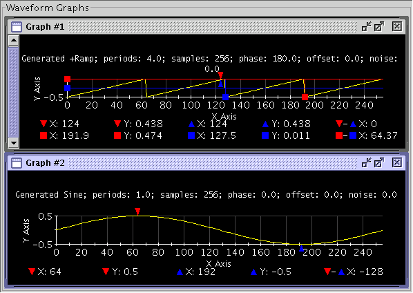
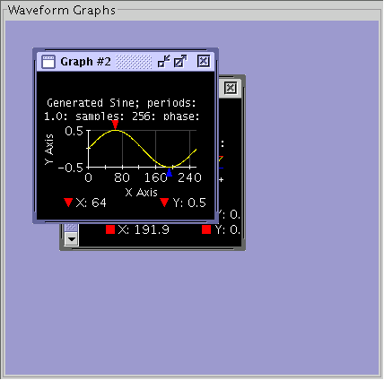
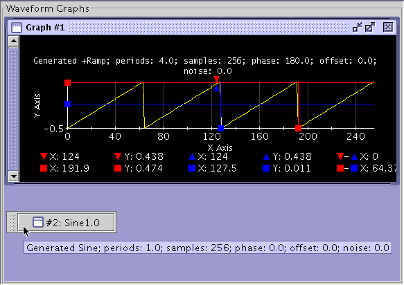

Multiple Data Display Panels
The Waveform Graphs Tool (WGT) allows multiple Data Display Panels. Each panel can be used to view either single or multiple waveforms. The header of the selected (active) graph is highlighted in blue.
Using the Window item of the Menu Bar, you can align, tile (horizontally or vertically), cascade, minimize (iconify), or delete Data Display Panels.
Align

Cascade

Iconify
